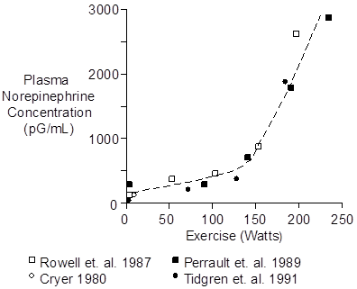
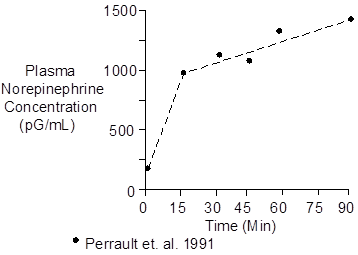
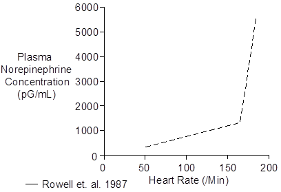
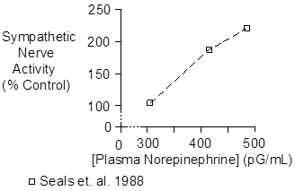

Exercise > Norepinephrine
Plasma norepinephrine increases during aerobic exercise in proportion to the intensity of the exercise.

Anaerobic exercise provokes even greater concentration increases (see Skeletal Muscle Afferent Nerves). In the curve above, anaerobic metabolism probably contributed to the steep norepinephrine increase seen at 200 Watts and above. Heart rates were 175 to 180 beats per minute at the most strenuous level of exercise.
Plasma norepinephrine concentration increases very rapidly at the beginning of exercise. But when exercise targets a specific workload, norepinephrine increases even further, but less rapidly, over time, as shown below.

The workload in this case was 67% of maximum O2 uptake.
The cause of the secondary norepinephrine increase was probably increased exertion compensating for fatiguing muscles. Another possibility is worsening acidosis (see Skeletal Muscle Afferent Nerves).
Note that norepinephrine concentrations can rise to levels during severe exercise that allow it to be a hormone rather than just spilled neurotransmitter. The threshold for hemodynamic and metabolic effects is 1800 pG/mL (Silverberg et. al. 1978).
Infusion to 2,150 pG/mL increased systolic pressure from 107 to 131 mmHg and increased diastolic pressure from 61 to 80 mmHg (Silverberg et. al. 1978). Heart rate fell from 64 to 55 beats per minute.
Highest concentrations of norepinephrine appear when heart rate is already close to its maximum value and, therefore, these concentrations do not increase heart rate further.

High norepinephrine and epinephrine concentrations may stimulate glucagon secretion (Galbo et. at. 1975). The glucagon, in turn, would liberate glucose to help fuel the anaerobic metabolism.
 Sympathetic Nerve Activity
Sympathetic Nerve Activity
Sympathetic nerve activity can measured directly using small electrodes.
Plasma norepinephrine concentration is directly proportional to sympathetic nerve activity, as shown below, making plasma norepinephrine a useful indicator of nerve activity.

Measurement of nerve activity during strenuous exercise has not been possible to date. The upper two points in the curve above were collected during arm cycling at 40 W and 60 W (Seals et. al. 1988).
Chemistry
Norepinephrine has a molecular weight of 169. Its composition is C8H11NO3.
Norepinephrine concentration in plasma is typically 220 pG/mL or 1.30 nMol/L (Cryer 1980, Planz and Planz 1979).
Units
Common units for endogenous plasma concentration are pG/mL and pMol/L. To convert pG/mL to pMol/L, multiply by 5.92.
References
Cryer, P.E. Physiology and pathophysiology of the human sympathoadrenal neuroendocrine system. New Eng. J. Med. 303:436-444, 1980.
Galbo, H., J.J. Holst and N.J. Christensen. Glucagon and plasma catecholamine responses to graded and prolonged exercise in man. J. Appl. Physiol. 38:70-76, 1975.
Perrault, H., M. Cantin, G. Thibault, G.R. Brisson, G. Brisson and M. Beland. Plasma atriopeptin response to prolonged cycling in humans. J. Appl. Physiol. 70:979-987, 1991.
Planz, G. and R. Planz. Dopamine-beta-hydroxylase, adrenaline, noradrenaline and dopamine in the venous blood of adrenal gland of man: a comparison with levels in the periphery of the circulation. Experientia 35:207-208, 1979.
Rowell, L.B., G.L. Brengelmann and P.R. Freund. Unaltered norepinephrine - heart rate relationship in exercise with exogenous heat. J. Appl. Physiol. 62:646-650, 1987.
Seals, D.R., R.G. Victor and A.L. Mark. Plasma norepinephrine and muscle sympathetic discharge during rhythmic exercise in humans. J. Appl. Physiol. 65:940-944, 1988.
Silverberg, A.B., S.D. Shah, M.W. Haymond and P.E. Cryer. Norepinephrine: hormone and neurotransmitter in man. Amer. J. Physiol. 234:E252-E256, 1978.
Tidgren, B., P. Hjemdahl, E. Theodorsson and J. Nussberger. Renal neurohormal and vascular responses to dynamic exercise in humans. J. Appl. Physiol. 70:2279-2286, 1991.